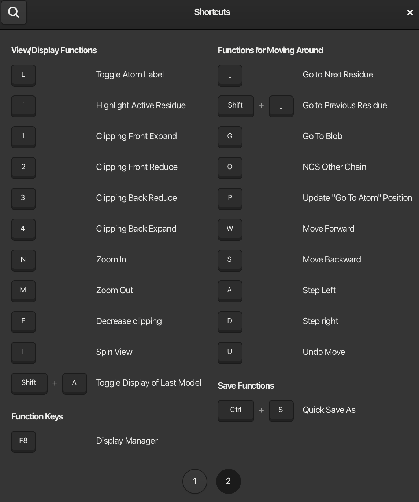

Coot 1.1 Shortcuts
Mouse Controls
Shift + Left/Right Mouse Button – Zoom in/out
Left + Right Mouse Button – Zoom in/out
Right Mouse Button – Rotate view (can be changed to Left Mouse Button in Edit → Preferences)
Double Left Click – Label/unlabel atom
Middle Mouse Button (Scroll Click) – Recenter on atom
Scroll Up – Decrease map contour level
Scroll Down – Increase map contour level
Keyboard Shortcuts
The keybindings in Coot 1.1 differ from previous versions. In the future, we plan to provide a script to restore the old keybindings if needed.
You can access the Shortcuts via the “About” section in the toolbar:

